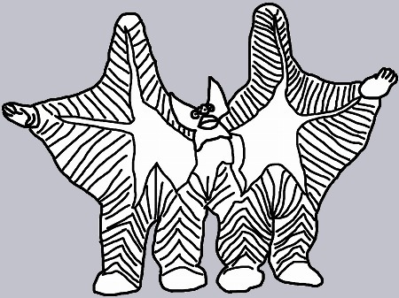
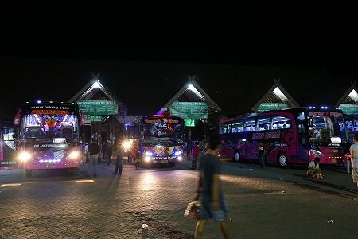
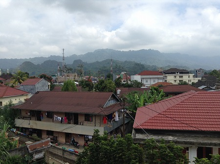

真夏のトラジャである。
トラジャって何だ？という方も多いだろうから大まかに説明させていただく。
トラジャというのはスラウェシ島の高地にある場所で、トラジャ族という山の民族が住んでいる。
当然、「じゃあスラウェシ島ってどこよ？」というハナシになるわな。
スラウェシ島はインドネシアに属する赤道直下の島で、戦時中は日本が統治していた時期もある。
年配の方には当時の呼称、セレベス島と言った方が通りがいいのかもしれないが、ホラ、そういった方は恐らくこのサイトを見てないから。
まあ、地図を見てフィリピンの南にあるウルトラ怪獣ペスターがウルトラマンに襲いかかっているみたいなヘンな形の島と思っていただければ多分そこである。
←こんな
そのぺスターの顔の辺りに相当するトラジャにはスラウェシ島の空港があるマカッサルから夜行バスで10時間。
世界中の僻地でバスに揺られてきた経験上、絶対凄い山道なんだろうなあ。おまけに数日前酔っ払って転んでお尻痛いし…。
酔い止め薬と痛み止め飲まなきゃかなあ。いいや、いっそのこと酒飲んで酔っ払っちゃおう！

…てなわけでバスに揺られること10時間。朝もや煙るトラジャの中心街、ランテパオの街に到着した。
揺れ？全然！むしろ日本の道幅では走行出来ないであろう巨大なベンツの夜行バスに乗ってベッドのような豪華シートで快適に過ごせましたよ。
ちなみに道路も近年整備されたらしく舌を噛むようなハードな揺れはほぼ無かったっす。
そんなこんなで早朝に右も左もわからない街に放り出された。
とりあえずコンビニでコーヒーとパンでも買って一息つくか…と思ったらコンビニはおろか開いてる店が一切ないぞ、トラジャの朝5時。
仕方なくバス降り場でたむろしてるホテルの客引きに着いていった宿の屋上にある食堂で朝食をとっていると靄が晴れてきて、段々周囲の様子が見渡せてきた。

茶色いトタン屋根が続く埃っぽい田舎町。その向こうには色濃い熱帯性の植物が茂っている。さらにその先には険しい山々がそびえている。
赤道直下とはいえ標高1200メートルの高地だけに朝は寒い！
（後に判るが日中は暑い！）
…というわけで
…今回はズバリ、トラジャ族の葬式と墓を巡る旅である。
本編で詳しく触れるが、トラジャ族は世界でも屈指の葬式と墓に金をかける民族といえよう。
人も時間もたっぷりかけた豪勢な葬式、何故こんなところに？としか思えないような場所にある墓…。
とにかく墓と葬式に異様に金をかけるのだ。
それは彼ら独特の宗教観、死生観に起因するのだが、その生き方はまさに死ぬために生きている人々としかいいようがないのだ。
そのあまりにも特異なスタイルに昔からずーっと憧れていて、行きたくて仕方がない場所のひとつだったのだ。
葬儀や墓が年々簡素化していく昨今の日本人から見たら驚異以外の何者でもない、そんな彼らの葬式と墓をつぶさに観察してみることにした。
なお今回骸骨やら血まみれシーンが満載です。苦手な方は見ないでね。
ケテケスの家と墓/Kete Kesu
ロンダの墓/Londa
レモの墓/Lemo
ボルの牛市場/Bolu
タウタウ工房/Tautau Doll Fuctory
ブントゥドパサの旧家/Buntu Du Pasa
マランテの墓/Marante
ボリとその周辺/Bori & around
パナとその周辺/Pana & around
トラジャの葬式（前半）/Funeral in Toraja part1
トラジャの葬式（後半）/Funeral in Toraja part2
スアヤの墓/Suaya
タンパガロの墓/Tampagallo
乳児の墓
おまけ